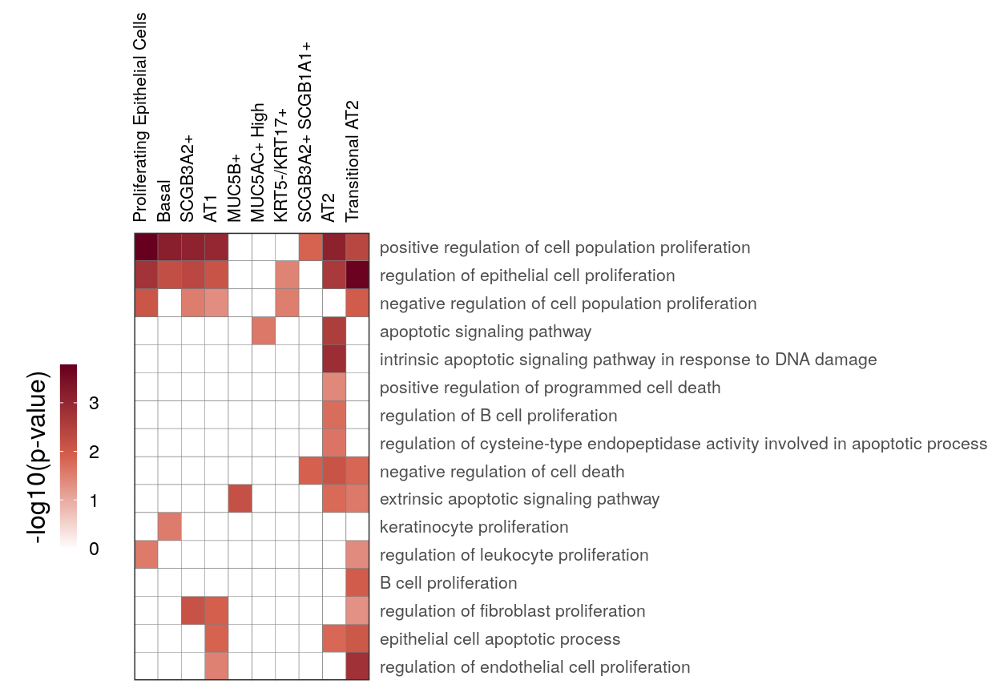
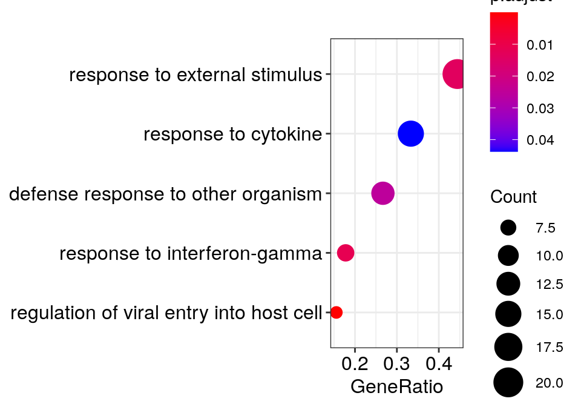
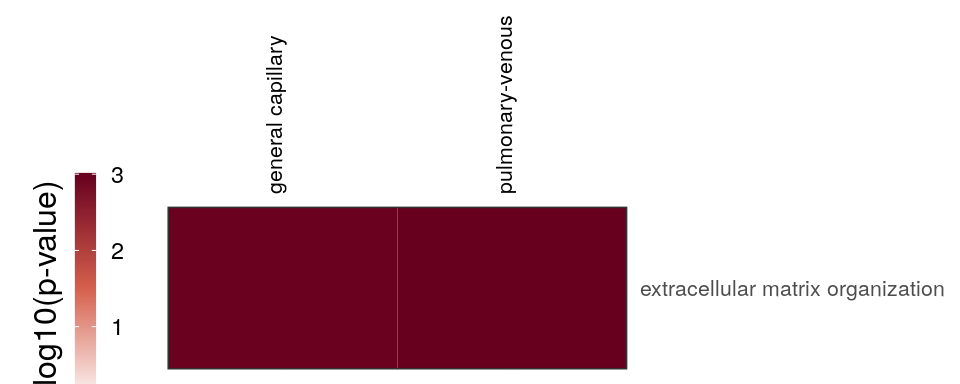
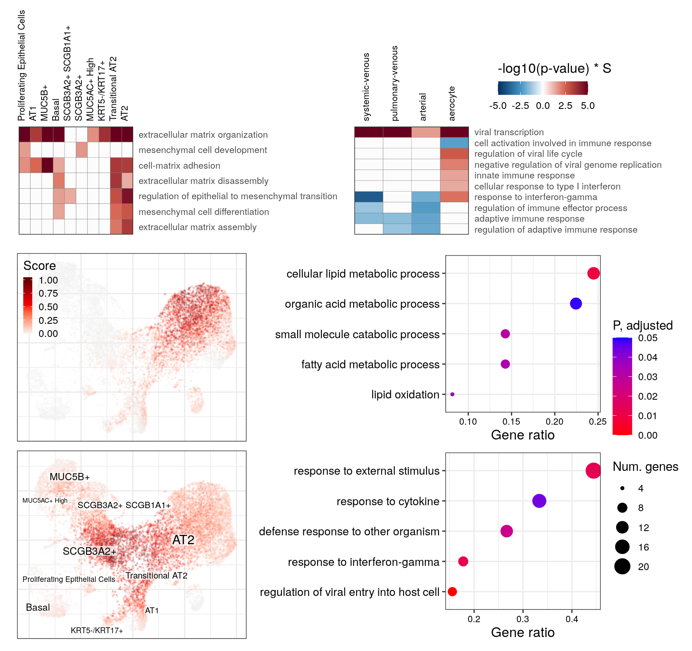

Last updated: 2022-01-21
Checks:
Knit directory: cacoaAnalysis/
This reproducible R Markdown analysis was created with workflowr (version 1.6.2). The Checks tab describes the reproducibility checks that were applied when the results were created. The Past versions tab lists the development history.
Great! Since the R Markdown file has been committed to the Git repository, you know the exact version of the code that produced these results.
Great job! The global environment was empty. Objects defined in the global environment can affect the analysis in your R Markdown file in unknown ways. For reproduciblity it's best to always run the code in an empty environment.
The command set.seed(20211123) was run prior to running the code in the R Markdown file. Setting a seed ensures that any results that rely on randomness, e.g. subsampling or permutations, are reproducible.
Nice! There were no cached chunks for this analysis, so you can be confident that you successfully produced the results during this run.
Great job! Using relative paths to the files within your workflowr project makes it easier to run your code on other machines.
Great! You are using Git for version control. Tracking code development and connecting the code version to the results is critical for reproducibility.
The results in this page were generated with repository version ebd3ecc . See the Past versions tab to see a history of the changes made to the R Markdown and HTML files.
Note that you need to be careful to ensure that all relevant files for the analysis have been committed to Git prior to generating the results (you can use wflow_publish or wflow_git_commit). workflowr only checks the R Markdown file, but you know if there are other scripts or data files that it depends on. Below is the status of the Git repository when the results were generated:
Ignored files:
Ignored: .Rhistory
Ignored: .Rproj.user/
Ignored: analysis/.Rhistory
Ignored: analysis/figure_cluster_based_de_bio.nb.html
Ignored: analysis/figure_cluster_free_expression.nb.html
Ignored: analysis/figure_compositional.nb.html
Ignored: analysis/figure_compositional_cf.nb.html
Ignored: analysis/figure_expression_shifts.nb.html
Ignored: analysis/figure_heterogeneity.nb.html
Ignored: analysis/figure_interpretation.nb.html
Ignored: analysis/prepare_cacoa_results.nb.html
Ignored: analysis/preprocess.nb.html
Ignored: analysis/report_asd.nb.html
Ignored: analysis/report_az.nb.html
Ignored: analysis/report_ep.nb.html
Ignored: analysis/report_ms.nb.html
Ignored: analysis/report_pf.nb.html
Ignored: analysis/report_scc.nb.html
Ignored: analysis/simulation_distances.nb.html
Ignored: analysis/simulation_variance.nb.html
Ignored: cache/
Ignored: data/ASD/
Ignored: data/AZ/
Ignored: data/EP/
Ignored: data/MS/
Ignored: data/PF/
Ignored: data/SCC/
Ignored: man/
Ignored: output/figures/
Note that any generated files, e.g. HTML, png, CSS, etc., are not included in this status report because it is ok for generated content to have uncommitted changes.
These are the previous versions of the repository in which changes were made to the R Markdown (analysis/figure_interpretation.Rmd) and HTML (docs/figure_interpretation.html) files. If you've configured a remote Git repository (see ?wflow_git_remote), click on the hyperlinks in the table below to view the files as they were in that past version.
File
Version
Author
Date
Message
Rmd
ebd3ecc
viktor_petukhov
2022-01-21
Updated the interpretation figure; extracted the supplement
html
7a60825
viktor_petukhov
2022-01-14
Compiled the interpretation figure
Rmd
03d3952
viktor_petukhov
2022-01-14
Updated interpretation figure
Rmd
c4d4786
viktor_petukhov
2021-12-27
Interpretation figure
Epithelial cells
Cluster-based
cao_ept$estimateOntology(org.db=org.db, type='GSEA')gg_at_apopt <- cao_ept$plotOntologyHeatmap(
name='GSEA', genes="up", description.regex='death|apopt|proliferation', min.genes=10,
description.exclude.regex='neur', max.log.p=5
)
gg_at_apopt
Past versions of unnamed-chunk-3-1.png
Version
Author
Date
7a60825
viktor_petukhov
2022-01-14
immune_regex <- 'vir|immune|interferon|inflam'
gg_at_immune <- cao_ept$plotOntologyHeatmap(
name='GSEA', genes="all", legend.title='-log10(p-value) * S',
description.regex=immune_regex, min.genes=10, max.log.p=5
)
gg_at_immune
Past versions of unnamed-chunk-4-1.png
Version
Author
Date
7a60825
viktor_petukhov
2022-01-14
gg_at_matrix <- cao_ept$plotOntologyHeatmap(
name='GSEA', genes="up", description.regex='matrix|mesen', min.genes=10, max.log.p=5
)
gg_at_matrix
Past versions of unnamed-chunk-5-1.png
Version
Author
Date
7a60825
viktor_petukhov
2022-01-14
Cluster-free
cao_ept$estimateClusterFreeDE(n.top.genes=1000, min.expr.frac=0.01, adjust.pvalues=TRUE,
smooth=TRUE)Estimating cluster-free Z-scores for 1000 most expressed genes0% 10 20 30 40 50 60 70 80 90 100%
[----|----|----|----|----|----|----|----|----|----|
***************************************************
Gene programs
gg_ept_annot <- cao_ept$plotEmbedding(color.by='cell.groups', size=0.2, alpha=0.2)
gg_ept_annot
cao_ept$estimateGenePrograms(n.programs=9, z.adj=TRUE, abs.scores=TRUE, smooth=FALSE, verbose=FALSE)cao_ept$plotGeneProgramScores(legend.position=c(0, 1), size=0.1, alpha=0.5, plot.na=FALSE,
adj.list=theme(plot.margin=margin()))
Past versions of unnamed-chunk-9-1.png
Version
Author
Date
7a60825
viktor_petukhov
2022-01-14
ggs_cf_scores <- cao_ept$plotGeneProgramScores(
prog.ids=c(6, 8), legend.position=c(0, 1), size=0.1, alpha=0.3, build.panel=FALSE,
plot.na=FALSE, adj.list=theme(plot.margin=margin(), plot.title=element_blank())
)
plot_grid(plotlist=ggs_cf_scores)
go_env <- cao_ept$getGOEnvironment(org.db=org.db)Using stored GO environment. Use `ignore.cache=TRUE` if you want to re-estimate it. Set `ignore.cache=FALSE` to suppress this message.gene_universe_global <- colnames(cao_ept$test.results$cluster.free.de$z.adj) %>%
cacoa:::mapGeneIds(org.db)
length(gene_universe_global)[1] 932t_scores <- c(6, 8) %>%
{setNames(cao_ept$test.results$gene.programs$sim.scores[.], .)} %>%
lapply(function(x) x[x > 0.5])
sapply(t_scores, length) 6 8
104 47 go_global <- lapply(t_scores, function(x) head(names(x[x > 0.5]), 50)) %>%
lapply(cacoa:::mapGeneIds, org.db) %>%
cacoa:::estimateEnrichedGO(org.db=org.db, go.environment=go_env, universe=gene_universe_global)
go_dfs <- lapply(go_global$BP, function(r) filter(r@result, p.adjust < 0.05)) %>%
.[sapply(., nrow) > 0]
sapply(go_dfs, nrow) 6 8
11 25
AT2 -> AT1
go_dfs$`6` %$% setNames(strsplit(geneID, "/"), Description) %>%
cacoa:::estimateClusterPerGO(cut.h=0.4) %>% {split(names(.), .)} %>%
sapply(paste, collapse='"; "') %>% {paste0('"', ., '"\n')} %>% cat()"cellular lipid metabolic process"; "lipid metabolic process"
"small molecule metabolic process"; "organic acid metabolic process"; "carboxylic acid metabolic process"; "oxoacid metabolic process"
"small molecule catabolic process"
"fatty acid metabolic process"
"fatty acid oxidation"; "lipid oxidation"; "lipid modification"gg_go_at <- clusteredOntologyDotplot(go_global$BP$`6`, orderBy='x', cut.h=0.4)
gg_go_at
Transitional state program
c_go_clusts <- go_dfs$`8` %$% setNames(strsplit(geneID, "/"), Description) %>%
cacoa:::estimateClusterPerGO(cut.h=0.4) %>% {split(names(.), .)}
c_go_clusts %>% sapply(paste, collapse='"; "') %>% {paste0('"', ., '"\n')} %>% cat"regulation of viral entry into host cell"; "modulation by symbiont of entry into host"; "negative regulation of viral entry into host cell"; "negative regulation of viral life cycle"; "regulation of viral life cycle"; "negative regulation of viral process"; "viral entry into host cell"; "entry into host"; "regulation of viral process"; "regulation of biological process involved in symbiotic interaction"; "movement in host environment"; "biological process involved in interaction with host"
"response to interferon-gamma"
"innate immune response"; "defense response"; "defense response to other organism"; "response to external biotic stimulus"; "response to other organism"
"response to external stimulus"; "immune system process"; "response to stress"; "cellular response to chemical stimulus"
"cytokine-mediated signaling pathway"; "cellular response to cytokine stimulus"; "response to cytokine"gg_go_trans <- clusteredOntologyDotplot(go_global$BP[["8"]], orderBy='x', cut.h=0.4)
gg_go_trans
Past versions of unnamed-chunk-16-1.png
Version
Author
Date
7a60825
viktor_petukhov
2022-01-14
cao_ept$plot.params <- list(size=0.5, alpha=0.5)
ggs_at_genes <- c("AGER", "HOPX", "SFTPC") %>% sccore::sn() %>% lapply(function(gn) {
cao_ept$plotEmbedding(colors=cao_ept$cache$joint.count.matrix.norm[,gn], legend.title="Expr.",
legend.position=c(0, 1), size=0.2, alpha=0.2)
})
ggs_at_genes %>%
plot_grid(plotlist=., labels=names(.), nrow=1, label_x=0.99, hjust=1)
Endothelial cells
# Requires running cluster-free expression figure first
cao_endo <- read_rds(CachePath("cao_pf_endo.rds")) %>% Cacoa$new()
cao_endo$estimateOntology(type="GSEA", org.db=org.Hs.eg.db::org.Hs.eg.db)gg_end_viral <- cao_endo$plotOntologyHeatmap(
name='GSEA', genes="all", legend.title='-log10(p-value) * S',
description.regex='vir|immune|interferon|inflam', min.genes=10, max.log.p=5,
description.exclude.regex='built from' # Remove one super-long GO for cluster name
)
gg_end_viral
Past versions of unnamed-chunk-19-1.png
Version
Author
Date
7a60825
viktor_petukhov
2022-01-14
cao_endo$plotOntologyHeatmap(name='GSEA', genes="up", description.regex='matrix|mesen')
Past versions of unnamed-chunk-20-1.png
Version
Author
Date
7a60825
viktor_petukhov
2022-01-14
Main figure
theme_ax <- theme(
axis.text.x=element_text(size=8),
axis.text.y=element_text(size=8, lineheight=0.75),
plot.title=element_blank(),
plot.margin=margin()
)
fill_guide <- guides(fill=guide_colorbar(
title='-log10(p-value) * S', title.theme=element_text(size=12),
title.position="top"
))
fill_scale <- gg_at_immune$scales$scales[[3]]
plt_list <- list(gg_at_apopt, gg_at_immune, gg_at_matrix, gg_end_viral) %>% lapply(function(gg) {
levels(gg$data$G1) %<>% str_wrap(50)
gg <- gg + theme_ax + fill_guide + fill_scale + theme_legend_position("none")
gg
})
plt_list[c(2, 4)] %<>% lapply(`+`, theme(
legend.position=c(2.3, 1.6), legend.justification=c(1, 1),
legend.direction="horizontal", legend.margin=margin(),
legend.box.margin=margin(),
legend.key.height=unit(12, "pt"), legend.key.width=unit(16, "pt")
))
go_fill_scale <- scale_color_continuous(low="red", high="blue", limits=c(0, 0.05),
guide=guide_colorbar(reverse=TRUE))
go_size_scale <- scale_size_continuous(limits=c(4, 20))
gg_go_at %<>% {. + go_fill_scale + go_size_scale + xlab("Gene ratio")}
gg_go_trans %<>% {. + go_fill_scale + go_size_scale + xlab("Gene ratio")}
go_leg_grob <- ggpubr::get_legend(
gg_go_at + guides(color=guide_colorbar(title='P, adjusted'),
size=guide_legend(title="Num. genes"))
)
plot_grid(
plot_grid(
plotlist=plt_list[3:4],
ncol=2, rel_heights=c(1, 0.6), align="hv", scale=0.95
),
plot_grid(
plot_grid(
rast(ggs_cf_scores[[1]]) +
theme(legend.key.width=unit(8, "pt"), legend.key.height=unit(10, "pt")),
rast(cacoa:::transferLabelLayer(ggs_cf_scores[[2]], gg_ept_annot, font.size=c(2, 4))) +
theme(legend.position="none"),
ncol=1, scale=0.97
),
plot_grid(
gg_go_at + theme_ax + theme(legend.position="none", axis.text.y=element_text(size=10)),
gg_go_trans + theme_ax + theme(legend.position="none", axis.text.y=element_text(size=10)),
ncol=1, align="v", scale=0.95
),
go_leg_grob,
nrow=1, rel_widths=c(1, 1.5, 0.3)
),
ncol=1, rel_heights=c(3, 5), scale=0.97
)
ggsave(figurePath("7_functional_interpretation.pdf"))